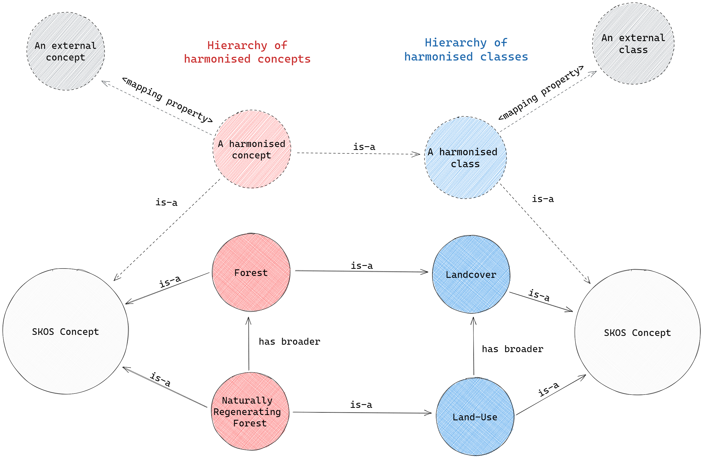

To export the ontology as RDF just call export_as_rdf().
The ontology and the file name have to be specified. The format is
optional and defaults to RDF-Turtle. Available formats are
rdfxml, nquads, ntriples,
turtle or jsonld.
ontoDir <- system.file("extdata", "crops.rds", package = "ontologics")
onto <- load_ontology(path = ontoDir)
export_as_rdf(ontology = onto, filename = "onto.ttl")Conversion to an RDF (Resource Description Framework) serialization is integrated to render the built ontologies interoperable with the Semantic Web. This document gives a short introduction to the RDF concepts we need for the conversion. For a more comprehensive introduction the article RDF, the semantic web, Jordan, Jordan and Jordan is recommended.
The IDs that are used in an RDF database have to be IRIs (IRIs are a
superset of URIs, which are in turn a superset of URLs). Typically, the
structure of URLs is used. In this package, we generate the RDF-IDs of
the concepts in the ontology by concatenating a prefix
(specified as uri_prefix in some of the functions) with
internal package IDs. The homepage of the example ontology we created in
create an ontology is
http:[slash][slash]www[dot]luckinet[dot]org. The internal
ID of the concept with the label
Naturally Regenerating Forest in this ontology is
.08.02. The resulting IRI-ID for this concept therefore
resolves to
https:[slash][slash]www[dot]luckinet[dot]org#.08.02. As you
see, # is used as concatenation symbol. Another widely used
option is /, in case the homepage string ends
with / or #, which is then used by
default.
The so-built IRI-IDs do not have to resolve to an actual resource on the Web, but it is highly recommended. If not possible, at least the prefix should resemble an actual Web page, as it is the case for the example.
In RDF every information is stored as a sentence like structure
called triple. A triple has a subject, a predicate and an object. Every
triple states a fact about it’s subject and ends this statement with a
period (.). The fact that the concept with the ID
<https://www.luckinet.org/.08.02> has the label
"Naturally Regenerating Forest" in RDF actually reads:
@prefix luckinet: <https://www.luckinet.org/> .
@prefix skos: <http://www.w3.org/2004/02/skos/core#> .
luckinet:.08.02 skos:prefLabel "Naturally Regenerating Forest" .In this case luckinet:.08.02 is the subject,
skos:prefLabel is the predicate and
"Naturally Regenerating Forest" is the object. Every
subject and predicate in an RDF triple have to be resources (that means
they are represented by an IRI); whilst object can be either a resource
or a literal value (as in the example above). The definition of the IRI
skos:prefLabel (https://www.w3.org/2004/02/skos/core#prefLabel) is given
by the triple:
skos:prefLabel skos:definition "The preferred lexical label for a resource, in a given language." .We can add some more facts from our ontology to the RDF database. The RDF representation that we use here is called RDF-Turtle. In RDF-Turtle a semicolon at the end of a triple indicates that the next statement also refers to the same subject (which is left out thereafter). A comma indicates that the next statement refers to the same subject and predicate.
@prefix luckinet: <https://www.luckinet.org/> .
@prefix skos: <http://www.w3.org/2004/02/skos/core#> .
@prefix rdf: <http://www.w3.org/1999/02/22-rdf-syntax-ns#> .
luckinet:.08.02 skos:prefLabel "Naturally Regenerating Forest" ;
skos:broader luckinet:.08 ;
rdf:type luckinet:land-use ;
skos:definition "Forest that regenerates naturally ..." .
luckinet:.08 skos:prefLabel "Forests";
rdf:type luckinet:landcover;
luckinet:land-use skos:prefLabel "Land-Use";
skos:broader luckinet:landcover .
luckinet:landcover skos:prefLabel "Landcover" .RDF is based on the open world assumption: in the above case that
means that not stating a definition of the concept .08 does
not mean that no definition exists; it’s simply not known whether a
definition exists.
Internally, the ontology is stored in an RDS objects that holds five tables (see ontology database description). If we take a look at subsets of the two particular tables harmonised concepts and harmonised classes from the ontology, we see that the first column holds an ID and in the other columns state facts about this ID:
Concept table:
| ID | label | description | class | has_broader |
|---|---|---|---|---|
| .08 | Forests | NA | landcover | NA |
| .08.02 | Naturally Regenerating Forest | Forest that regenerates naturally (this description needs revision) | land-use | .08 |
Class table:
| ID | label | description | has_broader |
|---|---|---|---|
| landcover | Landcover | NA | NA |
| land-use | Land-Use | NA | landcover |
RDF Triples for both tables can be generated according to the following scheme:
<Column[ID].at(index).value> <Column[...].columnName> <Column[...].at(index).value> .In a particular row, the ID always represents the subject, the column names represent the predicates and the according values of these columns the objects. That means, for a row in a table with five columns (including an ID column), potentially four triples can be constructed; one per non-ID-column that holds a value for this row. Converting both tables to a single RDF-Turtle-pseudocode leads to:
.08 label "Forests" ;
class landcover .
.08.02 label "Naturally Regenerating Forest" ;
definition "Forest that regenerates naturally (this description needs revision)" ;
class land-use ;
has_broader .08 .
landcover label "Landcover" .
land-use label "Land-Use" ;
has_broader landcover .And with that we are back at the example from the section above.
Of course, in reality things are a little more complicated. Looking
at the pseudocode above, we clearly see that the “IDs” are not IRIs by
any means. They still have to be concatenated with their according
prefix. The prefixes are stored in another table called sources, so we
have to use the IDs as foreign keys to build the IRIs. Since this
vignette’s intention is to give an overview over the concepts behind the
conversion, we won’t go into any more detail here. Please feel
encouraged to dive into the source code of
export_as_rdf.R.
SKOS is shorthand for Simple Knowledge Organization System. It is a lightweight RDF vocabulary that can be used to express knowledge organisation systems (KOS) as RDF and thus make them interoperable with the Semantic Web. Popular KOS, such as FAO Agrovoc or the UNESCO Thesaurus are expressed with SKOS.
We’ll now try to give a short introduction to the parts of SKOS that we use in this package; please also visit the SKOS reference page. It is assumed that the ontology database description document was read. From the SKOS vocabulary, we mainly use the semantic relations and the mapping properties.
The SKOS semantic relations are intended to be used
to built links between concepts that are part of the expressed KOS. For
this package, that means that they are only permitted between harmonised
concepts. The semantic relations that are required here are
skos:broader and skos:narrower. The Triple
ontology:concept_A skos:broader ontology:concept_B states
that concept A has the broader concept concept B. Both
relations are inverse to each other. That means that if
ontology:concept_A skos:broader ontology:concept_B then
ontology:concept_B skos:narrower ontology:concept_A. For
this very reason, we only describe one of both relations in the
ontologies tables; skos:broader. In this package, the
relation is indicated with has_broader in the tables
harmonised classes and harmonised concepts.
The SKOS mapping properties are similar to the
semantic relations, but they are used to construct relations between
concepts that are part of the expressed KOS and concepts that are
not part of it. For this package that means all
relations between harmonised classes or concepts and external classes or
concepts have to be described with the SKOS mapping properties. We
support four of the SKOS mapping relations:
skos:narrowMatch and skos:broadMatch have
similar meanings as the semantic relations introduces above. The
property skos:closeMatch indicates “two concepts that are
sufficiently similar that they can be used interchangeably in
some information retrieval applications” and
skos:exactMatch denotes “a high degree of confidence that
the concepts can be used interchangeably across a wide range of
information retrieval applications”, thus it allows transitive closure.
In this package, the mapping properties are indicated with
has_narrow_match, has_broad_match,
has_close_match and has_exact_match in the
tables harmonised classes and harmonised concepts.
Finally, SKOS provides the property skos:inScheme that
denotes that a concept is part of some KOS. In this package, the table
sources administers these KOS’ (skos:Schemes).
Each concept and class in this package is assigned to a certain scheme
listed in the sources table. For external concepts and classes
the column has_source indicates that scheme. Harmonized
concepts and classes are part of the harmonized scheme, which is
typically described in the first row of the sources table.
In the resulting document, both the harmonized classes and concepts are explicitly instantiated as SKOS-Concepts. The harmonized classes are additionally explicitly instantiated as RDF-Classes. Every harmonized concept is instantiated as an object of its according harmonized class. External concepts and classes are not explicitly instantiated as anything, although the use of the SKOS mapping properties allows to infer that they are instances of SKOS-Concept.
Harmonized concepts relate to other harmonized concepts via the SKOS
semantic relation skos:broader. Harmonized classes relate
to other harmonized classes via the SKOS semantic relation
skos:broader. Each harmonized concept that has a value in
the class column is instantiated as a member of this class
using rdf:type.
Harmonized Concepts relate to external concepts via the SKOS mapping properties. Harmonized Classes relate to external Classes via the SKOS mapping properties.
